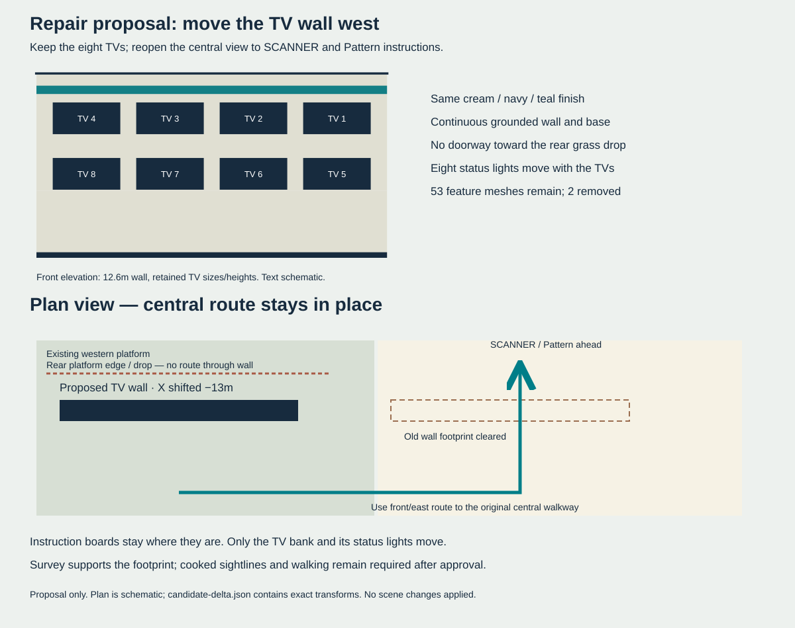

<!doctype html><meta charset="utf-8"><title>Station wall sightline repair</title><style>body{margin:0;background:#edf1ee;font:18px Arial}main{max-width:1200px;margin:auto}img{width:100%}p{margin:24px}</style><main><p>Proposal only — approval is pending. <a href="../repair-proposal.md">Scope and evidence</a> · <a href="candidate-delta.json">Exact candidate delta</a></p></main>